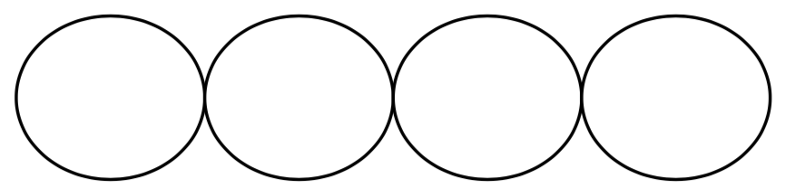

原始部落用一种稀有的泥土烧制直径相同的圆瓷片并串成项链，串的时候沿瓷片的直径方向顺次连接，瓷片之间没有空隙也不重叠，一条项链至少由一个瓷片构成。
下图示出四片同样大小的瓷片串接所成的项链，其总长为单个瓷片直径的四倍。

每个烧制的瓷片厚度是一定的，直径$D$和所用泥土的体积$V$有以下关系：
$D= \begin{cases} 0.3\sqrt{V-V_0} & (V > V_0) \\ 0 & (V \le V_0) \end{cases}$
其中$V_0$为烧制每一片的损耗，单位与$V$相同。当用料小于等于$V_0$时，不能烧制成瓷片。
例： $V_总 = 10，V_0 = 1$，若烧制成一片瓷片，$V = V_总= 10，D = 0.9$。如果把泥土均分成2份，每份泥土的体积为$V = V_总/2 = 5$，单个瓷片的直径为$D'=0.3\sqrt{5-1}=0.6$，串起来的总长为1.2。
给定了泥土的总体积和烧制单个瓷片的损耗，烧制的瓷片数不同，能够得到的项链总长度也不相同，请计算烧制多少个瓷片能使所得到的项链最长。
 Comet OJ
Comet OJ